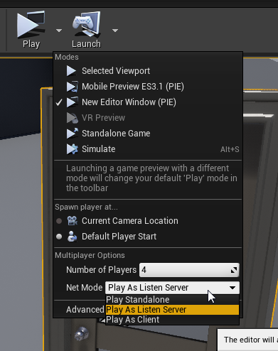
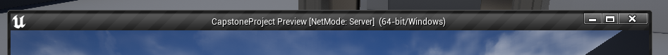

Setting up a Test Environment
So now that we've learned some of the basics of creating a multiplayer game, how can we test to make sure our code is working properly?
Luckily, Unreal makes this really easy for this and there is a built in option for testing local multiplayer straight in the editor!
If we go over to the play options which we would normally use to test the game and use the drop down, we can see this list of options:

Here we can see at the bottom there are multiplayer options, and the 2 most important ones for us will be Play Standalone and Play as Listen Server.
What playing as a listen server does, is it basically means that your PC will host a joinable session and you will be playing as the server host.
By selecting a number of players higher than 1 and choosing "Play as Listen Server", it will automatically give us multiple instances of the game running all within the same server.
This is extremely useful for quick multiplayer testing as with those options selected, all we need to do is press play and we can get straight to testing.
One thing to note, it is usually important to take note of which window is acting as your server, which can be indicated by the top window above each instance as shown here:

For clients it will show the same thing but client instead of server, that way you can keep track of how the game reacts on clients vs your server.
Once you've done your testing and your game is working, now we can move on to creating joinable sessions!